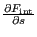
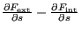
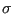
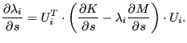
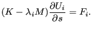
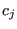
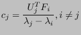
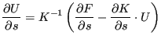
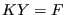
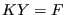

Next: Postprocessing the sensitivity Up: Sensitivity Analysis Previous: Preprocessing the sensitivity Contents
The sensitivity is calculated in routines results_se.c, mafillsmmain_se.c and objectivemain_se.c.
In routine results_se.c  is determined. For geometrically nonlinear calculations (parameter NLGEOM on the *STEP card) the unperturbed displacements leading to the internal force correspond to the displacements at the end of the previous static step, if any, augmented by the actual prescribed displacements. For linear geometric calculations the unperturbed displacements correspond to zero augmented by the actual prescribed displacements. Indeed, nonzero prescribed displacements lead to internal forces in linear calculations. Therefore, the term in Equation (467) can be replaced by  for linear calculations, noting that only nonzero initial displacement boundary conditions lead to internal forces (and not any previous displacements). The second reason why results_se.c has to be called for linear calculations too is that the material tangent at each integration point, which is needed in mafillsmmain_se.c for the set up of the stiffness matrix, is also determined in results_se.c.
Routine objectivemain_se.c calculates the derivative of the external forces and of the stiffness matrix (and similar matrices):
| (798) |
is calculated.
| (799) |
is determined.
| (800) |
is calculated, where  is an appropriately defined scalar.
Out of computational efficiency the latter terms are calculated at the element level and assembled into a global matrix thereupon.
The last major routine, objectivemain_se.c assembles the previous information to obtain the final sensitivity. For the orientation as design variable these sensitivities are immediately stored in the .dat or the .frd file. The sensitivity for the geometry (normal directions of nodes on the external surface) as design variable, however, is kept for further postprocessing in sensitivity.c.
For the objective  the total sensitivity
is written as
. The routine is split according to the
objective function:
the total sensitivity
is written as
. The routine is split according to the
objective function:
In general, the objective function does not have to apply to the total structure, e.g. one can define the mass of part of the structure as design variable. In that case all other elements are deactivated. This is done in routine actideacti.f. This applies to all objective functions, for which only part of the structure is included.
| (801) |
The first term on the right hand side is calculated in a similar way as for the MASS in routine objective_shapeener_dx.f. The term in brackets on the right hand side was already determined in results_se.f and mafillsmmain_se.f. Premultiplying it with the displacements from the previous static step and adding the first term yields the sensitivities (objective_shapeener_tot.f).
For a nonlinear geometric calculation Equation (468) reduces to:
| (802) |
Now, is calculated by solving the set of equations . The remaining operations are similar to the linear case.
|  | (803) |
The part starting with the brackets on the right hand side has been determined in mafillsmmain_se.f. Consequently,the sensitivity of the eigenfrequencies only requires the premultiplication with the eigenmodes. This is done in objective_freq.f and objective_freq_cs.f (cyclic symmetry).
For the sensitivity of the eigenmodes (only calculated for the orientation as design variable) the relevant equation is Equation (472), which can also be written as:
|  | (804) |
Assuming the sensitivity to be a linear combination of the eigenmodes:
| (805) |
leads to the following expressions for :
|  | (806) |
and . The latter equation results from the differentiation of the mass normalization condition . The determination of
 |
(807) |
is straightforward and is based on the expression calculated in mafillsmmain_se.f and the sensitivity of the eigenfrequencies.
| (808) |
and requires the solution of a system of equations for each design variable. The system matrix, however, does not change, so the LU-decomposition of the matrix has only to be done once.
For the orientation as design variable the frequency sensitivities are stored in the .dat file, whereas the sensitivities of the eigenmodes and/or Green functions are stored in the .frd file (frd_sen.c, called from objectivemain_se.c). For the geometry as design variable only the frequency sensitivities are determined. They are not stored in objectivemain_se.c since they may need further postprocessing in sensitivity.c.
 |
(809) |
for geometrically nonlinear calculations and
|  | (810) |
for geometrically linear calculations. In both cases the term in brackets on
the right hand side (let us call it  ) has been calculated
before. Therefore, the complete right hand side is determined by solving  for each design variable. Since the matrix of the system does not depend
on the design variable, it has only to be LU-decomposed once.
) has been calculated
before. Therefore, the complete right hand side is determined by solving  for each design variable. Since the matrix of the system does not depend
on the design variable, it has only to be LU-decomposed once.
For orientation design variables the result is transferred from the degrees of freedom to the (node,direction) representation in resultsnoddir.f and stored in the .frd file in frd_sen.c. For geometrical design variables the result is processed in objective_disp_dx.f. This is due to the fact that the displacement geometric function for geometrical design variables is defined as the square root of the sum of the square of the displacements in all design nodes. After leaving objective_disp_dx the result is kept for further postprocessing.
| (811) |
i.e. the stress S is a direct function of the design variables and an indirect function through the displacements. Indeed, the stress is the result of the “multiplication” of the material contants with the derivative of the displacements with respect to the geometry. Therefore, the indirect dependence through the displacements is clear. For geometrical design variables the direct dependence follow from “WITH RESPECT TO THE GEOMETRY” in the previous sentence, for the orientation design variables it follows from “THE MATERIAL CONSTANTS”. Therefore, the sensitivity of the stress can be written as:
| (812) |
where is approximated by
| (813) |
So the stress sensitivities generally require the knowledge of the displacement sensitivities. For orientation design variables the above operations require the routines resultsnoddir.f and resultsstr.c (and their subroutines). The results (i.e. the sensitivity of the von Mises stress at all nodes w.r.t. a change in an anisotropic orientation) are stored in the frd-file.
For geometrical design variables stress_sen.c and its subroutines are needed. The evaluation of the Kreisselmeier-Steinhauser function based on the von Mises Stress is done in subroutine objective_stress_dx.f. These results are kept for further postprocessing.